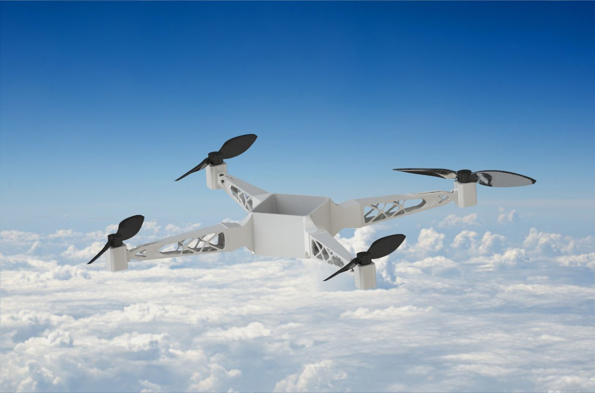

Renaissance
Renaissance is a Mars exploration rover engineered to navigate and operate in harsh Martian conditions, the rover features an eight-wheeled rocker-bogie suspension, advanced Nitinol wire-mesh wheels for superelastic terrain adaptation, and a 7-DOF robotic arm with swappable end-effectors. Its onboard systems include autonomous navigation via ROS, fault-tolerant computing, solar-based power generation, and a full scientific suite for mineral, atmospheric, and biological analysis. Renaissance demonstrates a systems-level integration of mechanical design, electronics, and software to simulate real-world interplanetary missions.
Avyakt
Avyakt is a hybrid UAV engineered by Inferno DTU for the International Planetary Aerial Systems Challenge. Designed for Mars exploration, it merges vertical takeoff capability with fixed-wing endurance, enabling payload transport, terrain mapping, and atmospheric sampling. Its adaptive structure features morphing wings, a gold-plated composite fuselage for radiation resistance, and a robust thermal control system using RHUs and graphene-based heat routing. Controlled by a PX4 + Jetson Nano stack and simulated in ROS/Gazebo, Avyakt operates autonomously across multiple flight modes, supported by solar thin-film arrays and LoRa-based communication. It represents a novel solution for interplanetary logistics and science missions.
NOVUS
NOVUS is a rugged Mars rover prototype developed as part of Team Inferno DTU's design initiative. The rover features a 6-DOF robotic manipulator and a custom double rocker suspension system that reduces weight by 20% while enhancing mobility on harsh terrain. Its composite-layered wheels and suspension links were fabricated in-house using advanced machining techniques such as CNC milling and turning. NOVUS exemplifies hands-on systems engineering with a focus on lightweight optimization, terrain adaptability, and mechanical robustness for extraterrestrial exploration missions.

Pagani Huayra
Modeled the aerodynamic exterior of the Pagani Huayra hypercar using advanced surface modeling techniques in SolidWorks. The project focused on replicating the vehicle’s complex curves, panel transitions, and functional aero components with Class A surface quality. Emphasis was placed on continuity, tangency control, and realistic proportions to achieve both visual fidelity and aerodynamic plausibility. The model served as a benchmark for reverse engineering workflows and high-detail rendering in automotive design applications.
ADAS for Low Visibility Conditions
Developed an Advanced Driver Assistance System (ADAS) for heavy earth-moving vehicles operating in low-visibility environments such as iron and coal mines at Tata Steel. The system integrated thermal imaging sensors with proximity detection and onboard processing to provide real-time visual and auditory alerts to drivers. Designed to enhance operator awareness in fog, dust, and night conditions.

Drone for Search and Rescue
Designed an autonomous drone system for real-time surveillance and payload delivery in disaster-struck environments such as earthquakes and floods. The drone operates across manual, semi-autonomous, and fully autonomous modes, offering adaptability for various mission requirements. Built using topology-optimized 3D-printed nylon components, it features a modular chassis, detachable arms, and a robust payload delivery system. Equipped with thermal cameras, LiDAR, GPS, and environmental sensors, the drone provides situational awareness, locates survivors, and delivers up to 5 kg of critical supplies. The flight stack integrates PX4 and ROS, with path-planning algorithms like A*, RRT*, and PSO evaluated for real-time deployment. The system is simulated using ArduPilot and QGroundControl, ensuring both operational reliability and mission efficiency in urgent response scenarios.
Drone Racing Algorithms
Developed a simulation-based autonomous drone racing system using the Crazyflie quadrotor to navigate through a complex sequence of gates while avoiding randomly placed obstacles. Implemented and benchmarked various path-planning algorithms including A*, RRT*, and Dijkstra’s, with A* combined with cubic spline smoothing selected as the final strategy for its optimal balance of speed, accuracy, and stability. The trajectory planning ensured each gate was traversed in the correct sequence with minimal overshoot and dynamically feasible flight paths. Using a hybrid of procedural waypoint generation and spline interpolation, the system achieved smooth, collision-free navigation under real-time constraints, showcasing the effectiveness of integrating graph-based planners with continuous trajectory optimization in competitive aerial robotics.
Microgripper for Single Cell Manipulation
Developed a rotary electrostatically actuated microgripper integrated with a compliant PNIPAM-based microgel tip for precise and safe manipulation of HeLa cells. The device uses a comb-drive actuator to generate torque, enabling rotational jaw motion while the thermoresponsive microgel cushions contact to reduce cellular stress and deformation. Simulations in ANSYS demonstrated that the microgel significantly increases the torque tolerance threshold before cell rupture, enhancing the safety and robustness of biological micromanipulation. Designed using SolidWorks and modeled for microfabrication via DRIE in Silicon Nitride, this system merges soft robotics and MEMS technology to enable minimally invasive, feedback-free biomedical operations.